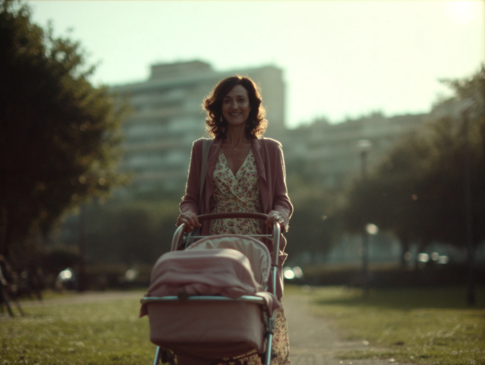

01
Time-lapse and location validation
Location potential / Défense apartment with a view

02
Fictional architecture in a real city
Philharmonie / Production feasibility

03
Windshield VFX and driving sequence
Live-action + VFX alignment

04
Rapid action visualization
Operational storyboard / Parking sequence

05
Optical rule for a waking nightmare
School corridor / Camera language

06
Invisible AI as a production solution
Long-lens secondary element

07
Montpellier tram / rain study
Urban atmosphere / Reflections

08
Super 8 / 1977
Period texture study